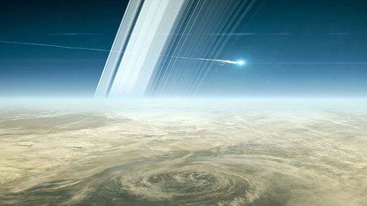
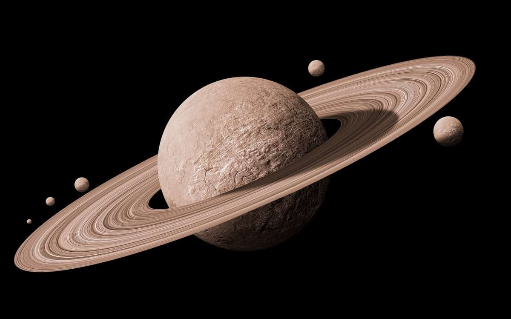

Saturno
O Senhor dos Anéis e a Beleza Cósmica
Um planeta majestoso no nosso sistema solar, conhecido por sua magnífica beleza e anéis deslumbrantes. Saturno é uma verdadeira joia celestial. Seus anéis, compostos por uma variedade de partículas, são a sua marca registrada. Esses anéis, que variam em tamanho e composição, são visíveis até mesmo com pequenos telescópios da Terra, tornando Saturno um dos planetas mais reconhecíveis e adorados por entusiastas da astronomia em todo o mundo.
História e Observação
Há milhares de anos, Saturno já despertava a curiosidade dos observadores do céu. Sua brilhante aparência a olho nu tornava-o um dos objetos celestes mais intrigantes para civilizações antigas, como os babilônios e os gregos. No entanto, sua notável característica, os anéis, não podia ser discernida com telescópios primitivos, levando a algumas interpretações curiosas.
Mas foi em 1610 que o astrônomo italiano Galileu Galilei, com um telescópio aprimorado, fez uma descoberta que revolucionou nossa compreensão de Saturno. Ele percebeu que Saturno não era uma estrela solitária, mas sim um planeta cercado por um par de objetos menores, que ele descreveu como "orelhas" ou "asas". No entanto, a qualidade de seu telescópio não permitia uma visão clara dos anéis, e essa observação inicial levou a confusões posteriores.

Atmosfera e Luas
Saturno também possui um grande número de luas, mais de 80 conhecidas até o momento. Sua lua Titã é particularmente notável por ter uma atmosfera densa e ser a única lua conhecida a ter lagos e rios de hidrocarbonetos líquidos em sua superfície.
Saturno é verdadeiramente um planeta que cativa nossa imaginação com sua beleza e complexidade. Seus anéis deslumbrantes e sua história rica na mitologia o tornam uma maravilha cósmica que continua a inspirar a exploração espacial e a pesquisa científica.
Composição Química
A composição química de Saturno é semelhante à de Júpiter, dominada por hidrogênio (cerca de 75%) e hélio (cerca de 25%). No entanto, Saturno também tem traços de outros elementos e compostos, como metano, amônia e vapor d'água em sua atmosfera. Esses componentes químicos interagem com a luz solar para criar as cores e as faixas visíveis em sua atmosfera.
Curiosidades
A Grande Mancha Branca: assim como Júpiter tem sua Grande Mancha Vermelha, Saturno tem sua própria versão chamada de "Grande Mancha Branca". Trata-se de uma tempestade persistente nas latitudes temperadas de Saturno.
Os Pequenos Pastores: as luas de Saturno chamadas "Prometheus" e "Pandora" são conhecidas como "pastores de anéis" devido à influência gravitacional que exercem sobre os anéis de Saturno, mantendo-os em órbitas distintas.
A Divisão de Cassini: a divisão de Cassini é uma faixa escura notável entre os anéis de Saturno, causada por uma ressonância gravitacional com a lua Mimas. Foi nomeada em homenagem ao astrônomo Giovanni Cassini, que a descobriu.
Vórtices no Polo Sul: a sonda Cassini também descobriu vórtices de tempestade no polo sul de Saturno. Esses vórtices hexagonais são um enigma atmosférico intrigante.
